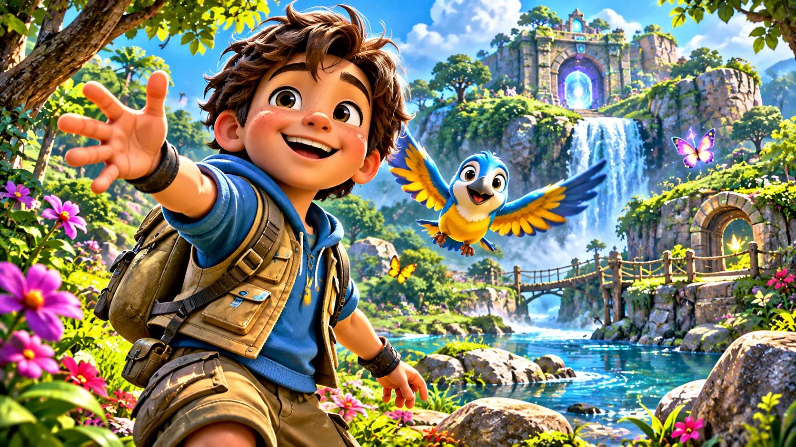
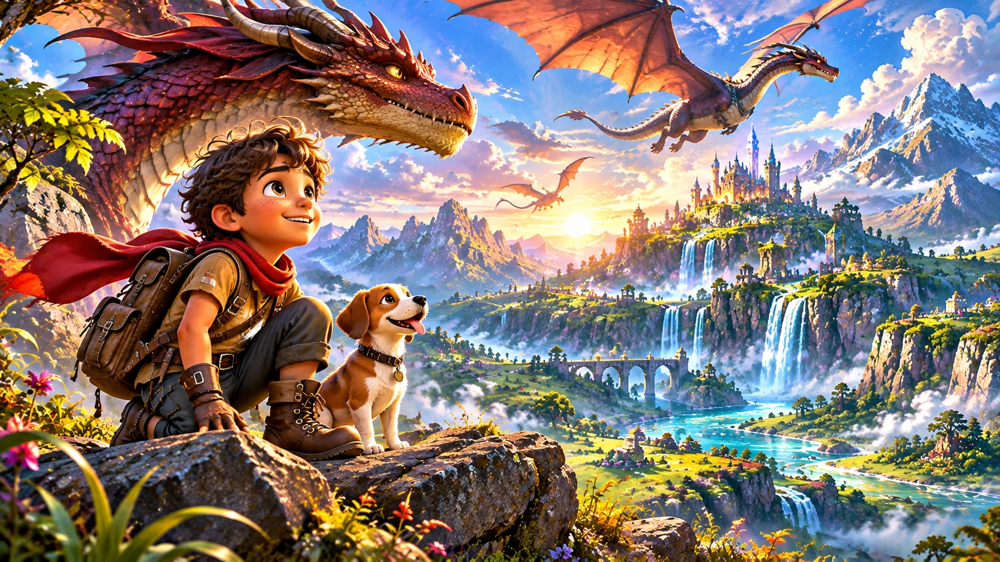

Idea & concept
Start with a question, a story, or a challenge worth exploring.

Welcome to the creative side of Don Yovanny, where imagination, thoughtful design, and technology come together to create interactive worlds.
Explore the creative process ↓Each project is a journey of experimentation, problem-solving, and continuous improvement.
Start with a question, a story, or a challenge worth exploring.
Shape characters, worlds, visuals, and interactions.
Turn the concept into a working, playable experience.
Try it, listen to feedback, and refine the details.
Share the experience and keep learning from what comes next.

GAME WORLD CONCEPT ARTOne example of this creative process is Niko's Great Adventure, an imaginative browser game for children ages 3–9.
The goal is to make playful activities approachable, with encouraging spoken guidance and opportunities to explore at a comfortable pace.
Explore the project ↗Build experiences that make people want to discover what comes next.
Consider different ages, abilities, and learning preferences from the start.
Let testing and real-world feedback guide better design decisions.

Don Yovanny is a home for today's projects and tomorrow's ideas. Dragon worlds, farm adventures, and other concepts offer a glimpse of the creative possibilities ahead.
Future-world artwork represents concepts, not announced or playable games.
View the game collection ↗Connect about creative projects, game development, and collaboration.
Get in touch ↗